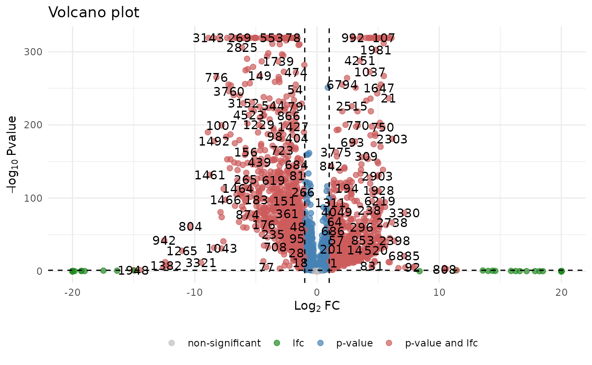

devil:
Differential Expression Analysis in scRNA-seqvignettes/articles/Introduction.Rmd
Introduction.RmdThis tutorial guides you through the use of the devil
package for analyzing differential gene expression in single-cell RNA
sequencing (scRNA-seq) data.
Before we begin, make sure you have the required packages installed
library(devil)
library(scRNAseq)
#> Loading required package: SingleCellExperiment
#> Loading required package: SummarizedExperiment
#> Loading required package: MatrixGenerics
#> Loading required package: matrixStats
#>
#> Attaching package: 'MatrixGenerics'
#> The following objects are masked from 'package:matrixStats':
#>
#> colAlls, colAnyNAs, colAnys, colAvgsPerRowSet, colCollapse,
#> colCounts, colCummaxs, colCummins, colCumprods, colCumsums,
#> colDiffs, colIQRDiffs, colIQRs, colLogSumExps, colMadDiffs,
#> colMads, colMaxs, colMeans2, colMedians, colMins, colOrderStats,
#> colProds, colQuantiles, colRanges, colRanks, colSdDiffs, colSds,
#> colSums2, colTabulates, colVarDiffs, colVars, colWeightedMads,
#> colWeightedMeans, colWeightedMedians, colWeightedSds,
#> colWeightedVars, rowAlls, rowAnyNAs, rowAnys, rowAvgsPerColSet,
#> rowCollapse, rowCounts, rowCummaxs, rowCummins, rowCumprods,
#> rowCumsums, rowDiffs, rowIQRDiffs, rowIQRs, rowLogSumExps,
#> rowMadDiffs, rowMads, rowMaxs, rowMeans2, rowMedians, rowMins,
#> rowOrderStats, rowProds, rowQuantiles, rowRanges, rowRanks,
#> rowSdDiffs, rowSds, rowSums2, rowTabulates, rowVarDiffs, rowVars,
#> rowWeightedMads, rowWeightedMeans, rowWeightedMedians,
#> rowWeightedSds, rowWeightedVars
#> Loading required package: GenomicRanges
#> Loading required package: stats4
#> Loading required package: BiocGenerics
#>
#> Attaching package: 'BiocGenerics'
#> The following objects are masked from 'package:stats':
#>
#> IQR, mad, sd, var, xtabs
#> The following objects are masked from 'package:base':
#>
#> anyDuplicated, aperm, append, as.data.frame, basename, cbind,
#> colnames, dirname, do.call, duplicated, eval, evalq, Filter, Find,
#> get, grep, grepl, intersect, is.unsorted, lapply, Map, mapply,
#> match, mget, order, paste, pmax, pmax.int, pmin, pmin.int,
#> Position, rank, rbind, Reduce, rownames, sapply, saveRDS, setdiff,
#> table, tapply, union, unique, unsplit, which.max, which.min
#> Loading required package: S4Vectors
#>
#> Attaching package: 'S4Vectors'
#> The following object is masked from 'package:utils':
#>
#> findMatches
#> The following objects are masked from 'package:base':
#>
#> expand.grid, I, unname
#> Loading required package: IRanges
#> Loading required package: GenomeInfoDb
#> Loading required package: Biobase
#> Welcome to Bioconductor
#>
#> Vignettes contain introductory material; view with
#> 'browseVignettes()'. To cite Bioconductor, see
#> 'citation("Biobase")', and for packages 'citation("pkgname")'.
#>
#> Attaching package: 'Biobase'
#> The following object is masked from 'package:MatrixGenerics':
#>
#> rowMedians
#> The following objects are masked from 'package:matrixStats':
#>
#> anyMissing, rowMedians
#> Warning: replacing previous import 'S4Arrays::makeNindexFromArrayViewport' by
#> 'DelayedArray::makeNindexFromArrayViewport' when loading 'SummarizedExperiment'
#> Warning: replacing previous import 'S4Arrays::makeNindexFromArrayViewport' by
#> 'DelayedArray::makeNindexFromArrayViewport' when loading 'HDF5Array'Let’s start by loading a sample dataset from the
scRNAseq package
# Load the example dataset
data <- scRNAseq::BaronPancreasData()
# Extract counts and metadata
counts <- data@assays@data[[1]]
metadata <- data@colData
# Display dataset dimensions
cat("Number of genes:", nrow(counts), "\n")
#> Number of genes: 20125
cat("Number of cells:", ncol(counts), "\n")
#> Number of cells: 8569
cat("Metadata features:", ncol(metadata), "\n")
#> Metadata features: 2To focus our analysis, we retain only the three most abundant cell types.
# Select the three most expressed cell types
top_3_ct <- names(sort(table(metadata$label), decreasing = TRUE)[1:3])
cell_filter <- metadata$label %in% top_3_ct
metadata <- metadata[cell_filter,]
counts <- counts[, cell_filter]
cat("Remaining cells after filtering:", nrow(metadata), "\n")
#> Remaining cells after filtering: 5928The design matrix specifies the experimental conditions for each cell:
# Create design matrix based on biological conditions
design_matrix <- model.matrix(~label, data = metadata)
# View unique conditions in your data
print(unique(metadata$label))
#> [1] "beta" "ductal" "alpha"Next, we fit the statistical model to the filtered dataset using the
devil::fit_devil() function.
In order to test the data you need to specify your null hypothesis using a contrast vector . Considering a gene along with its inferred coefficient , the null hypothesis is usually defined as
For example, if you are interested in the genes that are differentially expressed between the “beta” and “ductal” cell types, you need to find the genes for which we strongly reject the null hypothesis
$$ \beta_{beta} = \beta_{ductal} \hspace{5mm} \rightarrow \hspace{5mm} \beta_{beta} - \beta_{ductal} = 0$$
which is equivalent to defining the contrast vector
.
Once the contrast vector is defined, you can test the null hypothesis
using the test_de function.
# Test differential expression between conditions
contrast <- c(0, 1, -1)
test_results <- devil::test_de(fit, contrast, max_lfc = 20)
# Add gene names if missing
if (!('name' %in% colnames(test_results))) {
test_results$name <- as.character(1:nrow(test_results))
}The test results include:
pval : raw p-valueadj_pval : adjusted p-value (corrected for multiple
testing)lfc : log2 fold change between conditionsCreate a volcano plot to visualize significant genes
devil::plot_volcano(
test_results,
lfc_cut = 1, # Log fold-change cutoff
pval_cut = 0.05, # P-value significance threshold
labels = TRUE, # Show gene labels
point_size = 2
)
#> 82 genes have adjusted p-value equal to 0, will be set to 1.3394613724402e-319
In this tutorial, we covered the essential workflow for differential expression analysis using the devil package, including: